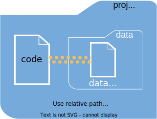
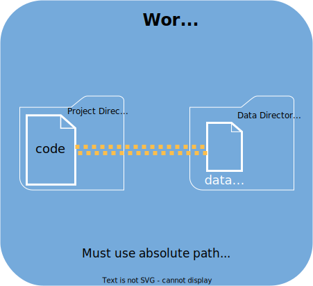

Accessing Data for Analytics On Workbench
This article will give an overview of accessing data for powering analytics on Workbench.
Depending on the resources your organization has, and the analytics being built, some of the data connections that might make sense to integrate with Workbench include databases, pinned data sets, flat files like csv’s stored in the project directory or a shared directory, mounted network drive, or some other kind of interface.
Databases
Databases are the gold standard for data storage and access. Storing data in a database comes with a number of benefits especially when it comes to integration, redundancy, performance, and security.
Code being developed on Workbench can pull data directly from a live connection to a database. When pulling data from a database into your analytics, you’ll want to consider how you will protect your credentials. We have recommendations for these topics and more within our database best practices pages.
Posit provides professionally-supported ODBC drivers for a number of databases for your use with Posit professional tooling. Installation is documented here. To configure the Posit Professional Drivers, or a driver supplied from another source, instruct your admin to specify the driver location and attributes in /etc/odbcinst.ini.
Pins
Pins is an R and Python package that allows for easy storage and retrieval of data, models, and other R objects. Pins can be a good choice when you don’t have write access to a database or when the data you’re trying to save is ephemeral, lightweight, or something like a model that won’t fit nicely into most databases. Pinned objects can be written to a variety of sources including Posit Connect, Amazon S3, and more.
You can create a pin with the pins::pin_write command and retrieve the data with pins::pin_read. A major benefit of pins is that for workflows where analytics will be deployed to a Posit Connect instance your code won’t have to change at all when you deploy – the read and write commands will work in both the IDE during development on Workbench and on Connect.
The pins page has more details on how to use pins.
Awareness of pin version retention is important when using pins. The default behavior of pins on Connect is to retain every pinned version, which may be unnecessary and can sometimes take significant space on the server, potentially causing the server to run out of memory. Consider pinning with versioned=FALSE or employ pin_version_prune to retain a smaller number of versions. It may also be worth discussing with your administrator a reduction to the bundle retention limit in order to further free up space on the server.
Blob Storage
Blob storage is the gold standard for storing unstructured data. It comes with advantages over traditional file storage with low latency, integration with backup systems, more options for access, and typically reduced overall cost.
Connection to your Blob storage is made in your R or Python code, typically facilitated with a package. Common Blob storage providers include:
- Azure Blob Storage through AzureStor for R, azure-storage-blob for Python
- Google Cloud through googleCloudStorageR for R, google.cloud.storage for Python
- AWS S3 through aws.s3 or PAWS for R, boto3 for Python
Similar to when managing connections to a database, you’ll want to consider how you will protect your credentials. We have recommendations within our securing credentials page.
Directory on Workbench
Data that is manually updated, or otherwise slow to change, can be stored in the code project directory, a shared project, or a separate designated directory. When using this method the data can be updated through using the Upload feature in the respective editor.
Typically this is a last resort data storage method since it is less reliable / reproducible compared to other methods. Consideration of a backup or version control strategy should be given when following this strategy.
One potential difficulty in using data from persistent storage on Workbench when developing analytics for deployment is that the data path will probably change between Workbench and Connect, unless the directory is in the same location on both computers. You can use the config package to have different paths in the development and deployed environment.
If you update the data more often than the code, use a different method.
If your data lives inside your analytics project directory and is only updated as often as the code, you can upload your data into your project with your code and access it with a relative file path.

If data is shared between projects then a separate directory can be created for storage. Access to and location of the data storage directory can be developer controlled or set up with the help of your administrator. Developer controlled data storage is through utilizing project sharing. Alternatively, an administrator can designate a directory for sharing data for developers to utilize either directly on Workbench or through mounting an external file share. Absolute file paths will need to be used when connecting to data stored in a directory outside of the current project.

An administrator can provision a shared directory and automate access to enable a team to upload/download/share data (e.g. /projects/project_id). After provisioning the directory, they will set access controls so that the appropriate team members have read/write access using Linux file permissions. Conversely, an administrator can disable access to projects outside of a user’s home directory, in which case the above may not be possible inside your configuration.
NFS is recommended when mounting an external file share due to native support with Linux. With additional configuration, your administrator can also mount other architectures for access by developers.
External clusters
You can leverage existing clusters for compute intensive work. A common workflow is to develop inside Workbench using Workbench jobs, Sparklyr, or PySpark, write the results to a separate data storage, then publish the apps, reports, and APIs to Posit Connect.
Workbench can integrate with various compute clusters, such as Kubernetes or Slurm, Databricks, Qubole using the sparklyr R package, and standalone spark clusters using the sparklyr R package. For Python developers PySpark is a popular package.
Other Methods for Accessing Data
Other sources of data can be integrated on a case by case basis. For example, for data stored in an external system often the developers will create an API through which data can be pulled.
Developers can interact directly with an API using packages such as httr and jsonlite in R or requests in Python.
For some APIs, in order to make them more accessible, the interface is bundled as a package for developers to use. At the end of the day a lot of these systems are storing the data in blob storage under the hood. Some examples include Microsoft365R and Office365-REST-Python-Client(see our additional writeup here), spotifyr, rtweet, googlesheets4 and pydrive and pydrive2, rdrop2, paws, boxr, and many more.
For up to date information on the best practices for how to use a package see its documentation.